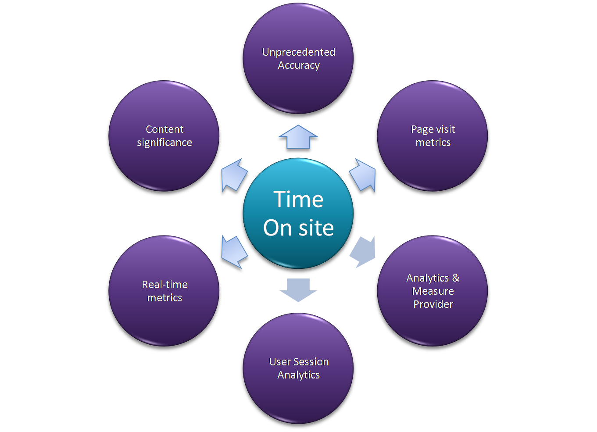

TimeonsiteTracker (TOS)
View the Project on GitHub saleemkce/timeonsite
Getting Started
Reporting Dashboard in PHP/NodeJs
Buy Licence/Use it free
Release Notes (latest: "v1.2.0")
Medium(.com) blogs
Need support? (how-to, integration, payment issues...)
Time On Site Metrics. Real-time!

Reasons why you should use Timeonsite.js in your web site/apps today
(works along with your other analytics tools! need not decommission other tracking tools!!!)
Key features of TimeOnSite(TOS) Tracker
- Measures user's time on site accurately
- Provides analytics of page and content significance
- Ignores inactive browser tab time to improve TOS metrics
- Easily configurable and highly customizable
- Tracks TOS data in Web and Mobile browsers efficiently
- Readily available reporting & analytics application in PHP/NodeJs
Important! Since the mid of 2021, sendBeacon() API is standard in most browsers; make use of it and achieve high accuracy; capture session-duration even for bounce-rated pages, a feature you regret missing in all other web analytic providers! (see "getting started" page for sendBeacon() real-time example)
Reports & Analytics Dashboard (Download it for free)
Reports Dashboard
Analytics Dashboard
Licensed & Free version
Free Version
TimeOnSite Tracker can be used for free without purchasing a licence key in following cases:
- Using it in non-production environments like development, test, stage etc. (ex. http://testing.example.com) and for testing purposes
- It's free to use for personal sites, non-profit organizations and educational universities but it cannot be embedded in other open-source software, commerical software and libraries since it is per-domain based licence model.
Licensed Version
TimeOnSiteTracker.js is strictly commercial software. Using it in live/production servers and environments (ex. http://example.com) require that you purchase licence key. It's illegal to use without a valid licence key. The tracker snippet itself has to contain licence key to ensure that it's valid.
- (Standard) The cost of licence is $38 (USD) per year as of (For individuals & mid-sized applications) (OR)
- (Premier) For large and enterprise applications, there is one-time lifetime licence cost $375 (USD) [Recommended, includes detailed email support and recommendations]
- The licence is website domain-specific. It's not specific to no. of users/products like other commercial software. Any no. of users/applications under a single domain (ex. http://example.com) can use the purchased software.
- Follow the instructions below for your site/app registration and buying licence. This license is valid for 1 year from the date of purchase. Once a year completes, you need to pay successive year for continued use. Licence key will be sent to your registered email id and is tagged with your domain name. This means you will have single license key mapped with your website as long as you wish to use. If you don't wish to use the software, you could stop paying for it.
-
Valid licence key looks like the following, for example,

Buy licence now?
Buying licence is a two-step process as given here
- Register your application(website)
-
(Standard)
Pay with Paypal (mention your company/entity name in remarks/message box at the time of payment)
[or]
(Premier) Pay with Paypal (mention your company/entity name in remarks/message box at the time of payment)
Your support is always welcome!
If you are a general user of timeonsite tracker and not willing to pay full licence money, you may contribute a smaller amount like $10 or $15 to show your support for us or as a token of love or to help us continue build a modern, transparent & accurate time-on-site tracker. You can use the same Paypal link above and customize it for smaller contribution.
Developed with love for web & analytics at Chennai, remember Marina? All praise be to Almighty God.
TimeonsiteTracker.js, the commercial software with free use options!.